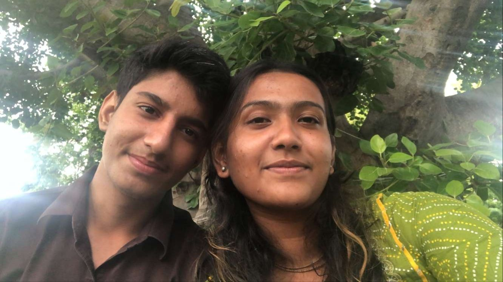
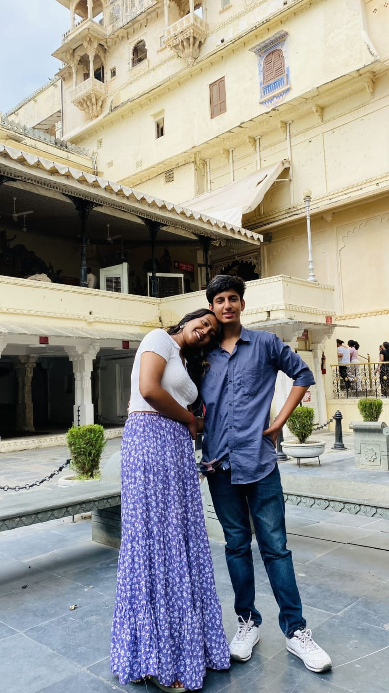
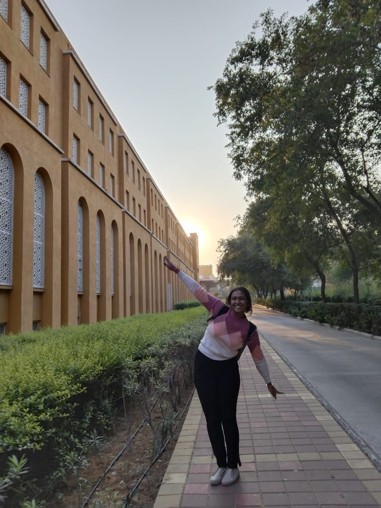

For Kittu
"Some things I understood in seven days."
Hello Kittu,
It’s 8th October 2026. It has been 7 days since we saw each other’s faces on video call. We have been together for 2 years, 5 months, and 9 days, and in this time I know I have made many mistakes.
I know we both are exhausted.
For the last 7 days, we were on a break and giving each other space. In this space, I understood many things about myself, about you, and about our relationship.
Seven days of silence.
I understood that giving space is important in a relationship. Sometimes we need time away from each other so we can understand ourselves, our thoughts, our mistakes, and what we really want.
I also understood that I don’t want restrictions in my own life, and I don’t want to put any restrictions, insecurities, or pressure on you. I don’t want you to feel pressured because of me, and I don’t want our relationship to work only on expectations.

We can have space
and still choose
each other.
These last 7 days also made me understand that we can have this freedom and still be together. We don’t have to control each other’s lives or be present in front of each other 24/7. We can have our own space, our own life, and our own personality, but still choose each other and stay together.
What I found
in myself.
I understood many things about myself also. I learned how to respect myself, and I learned how to respect you properly.
I understood that many insecurities I had were only thoughts in my mind and not reality. Sometimes I was creating problems because of what I was thinking, not because of what was actually happening.
Where I was wrong.
I also understood my mistakes. My short temper and shouting were a big issue, and I know I hurt you because of that.
I have been working on this for the last 4 weeks, and I can see changes in myself.
I also improved my habit of emotionally blackmailing you. You can see that in this fight and in our last 2–3 fights, I did not blackmail you.
I know saying this is not enough, but I am trying to improve these things through my actions. I don’t want to become that person again.
I love you because I genuinely love you.
I also understood that I really love you unconditionally. I don’t want to love you with expectations, conditions, restrictions, or because I want something from you. I love you because I genuinely love you.
Love is not ownership.
I understood that relationships are not contracts or properties that work on agreements. We don’t need to make rules for each other or control each other.
A relationship works with trust, love, loyalty, transparency, understanding, patience, and respect.
We don’t need to be in front of each other 24/7 to prove our love.
Not back to zero.
I don’t want us to restart from 0. I want us to continue from where we stopped, but with our new selves.
I know I have changed in many ways, and I am still improving. I am calmer now, I am focused on my work, and I want to develop my own personality and become better for myself, not only for this relationship. But I also want to do this while having you in my life.
Sometimes, we just need to breathe.
I understand now that sometimes we both get tired. At that time, we may not need more arguments, explanations, or conversations.
Sometimes we only need space, rest, calmness, patience, and time.
We should be able to give each other this space without thinking that space means we are losing each other.
What I want
for us.
So I don’t want us to go back to the same relationship we had before. I want us to move forward with everything we have learned.
Freedom without fear.
Love without pressure.
Trust without unnecessary insecurities.
I want us to have freedom without fear, love without pressure, and trust without unnecessary insecurities. I want both of us to grow individually and still grow together.
I don’t want to force anything on you, and I don’t have any expectations from you. I just want us to continue from where we stopped, but this time with more understanding, trust, patience, and the changes we have learned from everything that happened.
I really want to continue this relationship, Kittu.
Not only because we have already spent 2 years, 5 months, and 9 days together, but because even after everything, I still genuinely want you in my life.
I want us to create beautiful moments together, without pressure, without restrictions, and without losing ourselves.
I am genuinely sorry.
I love you, Kittu.
— Your Anne
The Last Code